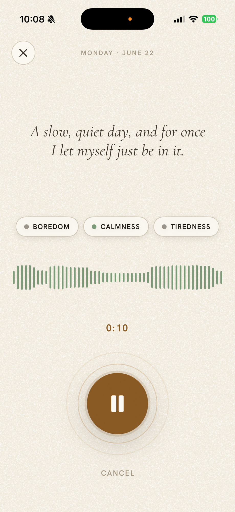
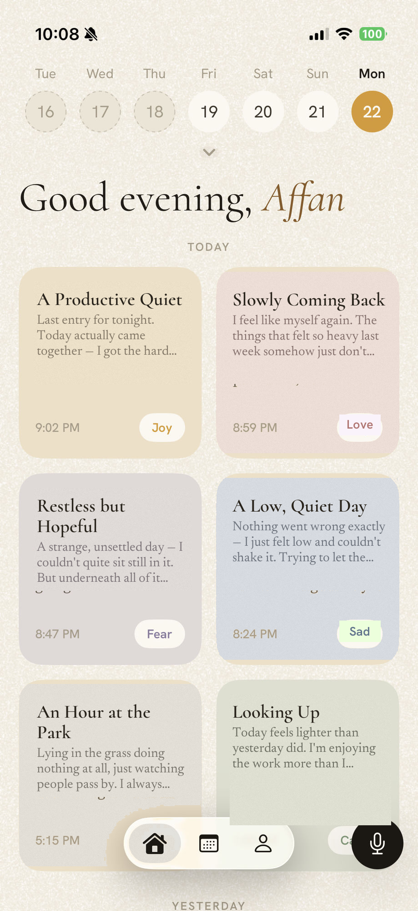
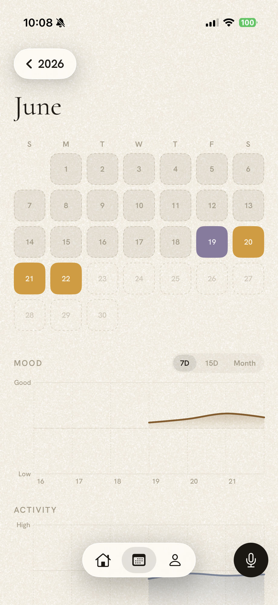

Open it and just talk.
A minute, a sentence, a ramble, whatever the day was. No typing, no blank page staring back at you.

Talk for a minute. dyeary writes the entry for you, then quietly colors the day by how you sounded, until a whole year takes shape.
One year in dyeary · each square is a day, colored by its mood
A minute, a sentence, a ramble, whatever the day was. No typing, no blank page staring back at you.

dyeary writes your day into a real entry, then reads the tone of your voice and gives it a color. The feeling is saved right alongside the words.

Every entry colors a day on your map. You don't rate anything. You just keep talking, and the shape of your year appears.

dyeary is in private beta on iOS. Join early and watch your first months fill in.
Join the beta →